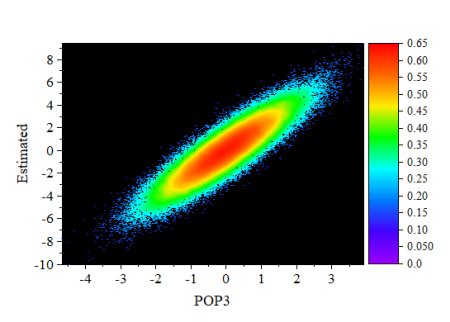

Dichtepunkte
Density_Dots
- 
Datenanforderungen
Wählen Sie genau eine Y-Spalte oder einen Datenbereich einer Y-Spalte aus. Wenn es eine verbundene X-Spalte gibt, stellt die X-Spalte die X-Werte bereit; ansonsten wird ein Abtastintervall der Y-Spalte oder Zeilennummer verwendet.
Diagramm erstellen
- Wählen Sie Daten einer Y-Spalte aus.
- Wählen Sie im Menü .
Vorlage
DensityDots.OTP (installiert im Origin-Programmordner).
Algorithmus
Für kleine Datensätze wird die Methode der genauen Schätzung verwendet, um die Kernel-Dichte zu berechnen.
Für große Datensätze (definiert durch Systemvariable KDM, Standardwert ist 20.000) wird ein schneller Algorithmus verwendet, um die Dichte zu berechnen. Zuerst wird die eingeteilte 2D-Approximation verwendet, um die Kernel-Dichte für einen Satz von 2D-Gitternetzpunkten zu berechnen (definiert durch Systemvariable DCGS, Standardwert ist 151*151). Dann wird die 2D-Interpolation angewendet, um die entsprechenden Dichtewerte für die ursprünglichen (X, Y) Punkte aus den Dichtewerten des Gitternetzes zu konstruieren.
Hinweise
Diese Vorlage ist zum Zeichnen von großen Anzahlen von Streupunkten gedacht, wobei die Dichte der Punkte von besonderem Interesse ist:
- Der Entwurfsmodus ist per Standard ausgeschaltet, so dass die Dichte genau dargestellt wird.
- Die Vorlage verwendet als Streusymbol ein gefülltes Standardquadrat der Größe "0".
- Um Diagramme schneller neu zeichnen zu können, ist das Bitmap-Caching für diesen Diagrammtyp ausgeschaltet. Wenn Caching verwendet wird, werden die Größe und die Propotionen eines vorbereiteten Bitmaps je nach Bedarf angepasst, wenn das Fenster in der Größe verändert oder gestreckt wird. In einigen Fällen wird dieses Bitmap pixelig oder verzerrt. Sollte dies nicht akzeptabel sein, können Sie das Caching ausschalten, indem Sie auf die Schaltfläche Dichtedatenmodus auf der Minisymbolleiste (Seitenebene) zweimal klicken (nach dem zweiten Klick sollte sich kein Häkchen mehr auf der Schaltfläche befinden).
-

- Wenn die Diagrammseite sich in der Fensteransicht (Standard) befindet, einen einzelnen Layer enthält und gefüllte Quadratsymbole der Größe "0" verwendet, wird ein Rasterbild in der Zwischenablage platziert, wenn Sie Bearbeiten: Seite kopieren wählen.
- Streupunkte werden auf einer Farbskala abgebildet mit Hilfe eines berechneten "Nähe"-Faktors für jeden gezeichneten Punkt. Während also die Position des Punkts von den XY-Koordinaten bestimmt wird, wird die Farbe, die diesem Punkt zugewiesen ist, mittels eines Algorithmus berechnet. Die Farbe wird nicht auf Grundlage der relativen Beträge der Y-Werte zugewiesen.
- Die Vorlage verwendet eine spezielle Option der Dichtefarbabbildung auf der Registerkarte Nach Punkten der Farbauswahl. Wie bei jedem farbkodierten Diagramm können Sie die Farbabbildung selbst über Bedienelemente auf der Registerkarte Farbpalette im Dialog Details Zeichnung bearbeiten.